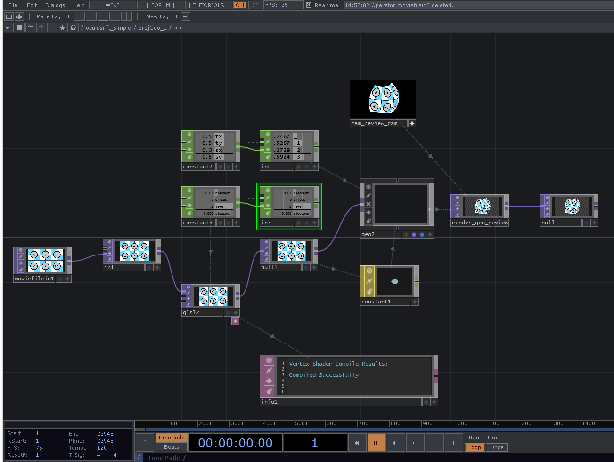

Touchdesigner
I have only started using this software from the start of the year. I was exposed to it by way of my engagement with the local university design school. I was tutoring in a graduate level media design course in interaction design. The lecturer in the course used touchdesigner as the framework for the course. I was very impressed at how well it performed as a tool for design education.
I have been using touchdesigner for viewing the results from the rig. I’m still not too skilled with it just yet. I quite love its real time focus. I’ve had enough of offline rendering to last a lifetime.
There are a few reasons I’ve chosen to go with this touchdesigner route instead of the 4k over-under or sbs in one of the several rift viewers available. Even though it’s taken me quite a while to get the swing of it, touchdesigner is incredibly flexible. The software is updated regularly. There is a decent amount of learning material available and a generous community. The documentation via twiki could be richer. I’m still puzzling out some aspects. Other than that, I’ve been quite satisfied using it.

With it, I can try out different things pretty easily and build out adjustments into the viewer instead baking them into the video file with an after effects render. This is inclusive of the audio aspects which I’ve been focused on lately. I still have to edit and render out of premiere, but I can do adjustments like IO, fisheye correction, placement, grading, even retiming, all while wearing the headset. I’ve done things like hook up a midi controller to things like IO and playback speed. This allows me to turn a knob and find the most comfortable IO adjustment, as an example.
As I am approaching the mult-camera and stitching part of the project, I’ve been considering how to best use the available pixel distribution, trying ideas like focusing high resolution images in a forward direction, or only keeping a key forward range as stereo the rest mono, or doing spherical mono with two cams and a high-res frontal stereo with 4 or more. These are things I’d like to explore and Touchdesigner will support this experimentation nicely, including realtime stitching. I’m also planning to investigate disparity mapping and other depth generation techniques, and again I don’t see obstacles from touchdesigner